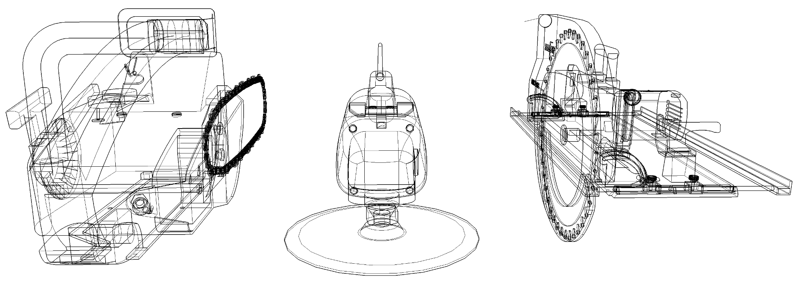
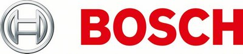
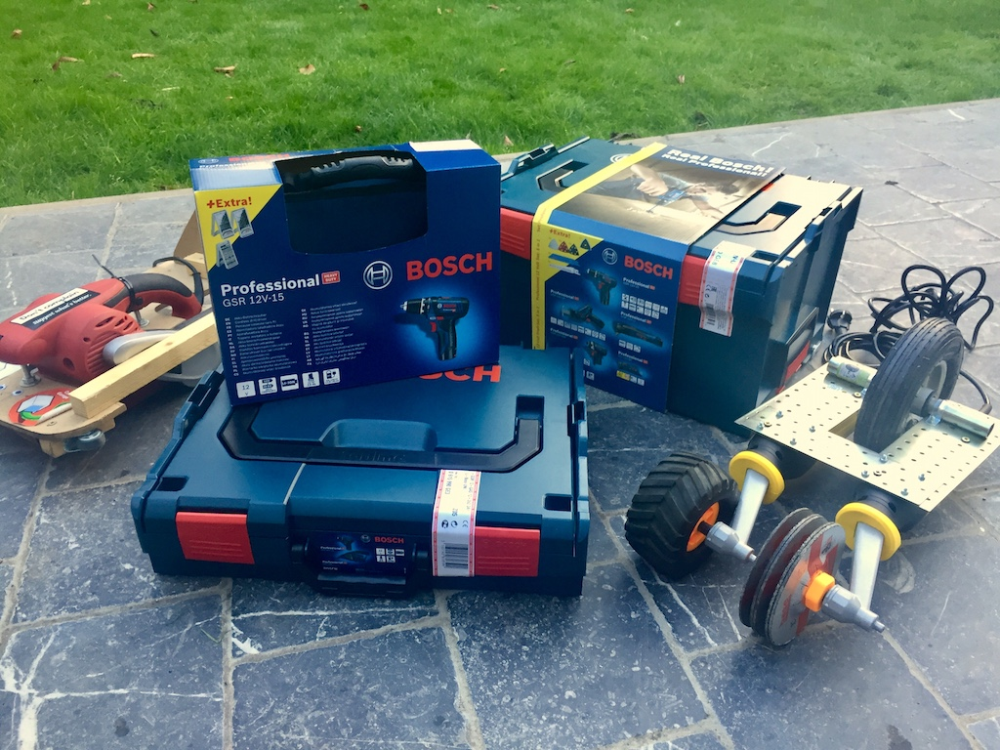

Belgisch Kampioenschap Power Tool Drag Racing
What could possibly go wrong?

Met hoofdprijzen gesponsord door Bosch

WTF, power tool drag racing?
Redneck robot wars
Deelnemers brengen cirkelzagen, schuurmachines en haakse slijpers mee die werden omgebouwd tot heuse racemachines en proberen zo snel mogelijk een houten parcours van 20 meter af te leggen. Spektakel verzekerd!
Tijdens onze eerste editie in 2016 stonden 16 teams met hun bolide aan de start. Meer dan 300 toeschouwers zagen Team Atelier Vilvoorde de kampioenstitel voor 2016 in de wacht slepen.
Jonathan Van Hemelrijck maakte deze aftermovie van ons kampioenschap:
Karrewiet, het jeugdjournaal van Ketnet, maakte deze reportage van ons kampioenschap:
Comedy man Henk Rijckaert nam voor zijn Koterij YouTube kanaal ook deel en maakte een verslag:
Lokale televisie ATV was ook present voor een reportage:
Verder publiceerden ook de Gazet van Antwerpen en Het Laatste Nieuws een verslag van een geweldige namiddag.
Praktisch
Te land, ter zee en door de plank
Het BK power tool drag racing 2017 zal plaatsvinden op zondag 26 november 2017, de Dag van de Wetenschap. De eerste wedstrijden zullen iets na de middag beginnen, afhankelijk van het aantal deelnemende teams, en we hopen de finale tussen 16:00 en 17:00 te rijden.
Het kampioenschap gaat door in de schuur van Alles Loopt Op Rolletjes. Het adres is Zoomweg 2, Borsbeek, op deze plek op Google maps.
Prijzen!
Om de titel van Belgisch Kampioen meer kracht bij te zetten, sponsort BOSCH voor de snelste en charmantste racers van het kampioenschap fantastisch mooie prijzenpakketten "blauwen" Bosch!
We ontvingen als grote prijs een top-of-the-line set van vijf professionele powertools op Li-On batterijen, een professionele schroefboormachine en een set met professionele schroefboormachine en accustofzuiger!

We danken Bosch voor deze extra aanmoediging voor onze wedstrijd!
Teams & inschrijving
Heb je een team en ben je een machine aan het bouwen? Als je je wil inschrijven om met je monstervoertuig deel te nemen, stuur ons dan een e-mailtje, met de naam van je team of de naam van je racebolide, voor 20 november 2017!
De volgende teams zijn intussen ingeschreven:
- Atelier Vilvoorde (Jan Huygh, uitdagend Belgisch Kampioen Power Tool Drag Racing 2016)
- Koterij (Henk Rijckaert)
- De 3 Musketiers (Ken Goossens)
- 🏎💨 (Studio Dott)
- VerBrother 1 (CoderDojo Lier)
- VerBrother 2 (CoderDojo Lier)
- Katmobiel (Staf Liekens)
- Amortisseur 1 (Fons Deckers)
- Amortisseur 2 (Bart Deckers)
- Amortisseur 3 (Fons en Bart Deckers)
- Vleesmolen (John, Fred en Bas)
- BAHRtSJOK (Jesse Taeymans)
- Angry Panda (Radboud Stam)
- Inca-1 (Ingmar Jansen)
- Titanic (Stan Peeters)
- Power Dragster (Sean Lampen)
- Motul (Stefaan Ponnet)
- Swarm (Hannah, Michiel, Jonas en Leon)
- Delirium (Dimitri Pauwels)
- Axel's Green Machine (Axel Pauwels)
- Kammeniboemski (Stefan Van Geenhoven)
- Double Trouble (Louis Liekens)
- Notenschelp X (Steffest)
- Puber Mania (Steffest)
- LaDa (Daan Gerits)
- Baserati (Bas Peeters)
- Er zijn nog 6 vrije plaatsen!
- Er zijn nog 5 vrije plaatsen!
- Er zijn nog 4 vrije plaatsen!
- Er zijn nog 3 vrije plaatsen!
- Er zijn nog 2 vrije plaatsen!
- Er is enkel nog de laatste vrije plaats om in te schrijven!
Spelregels BK power tool racing
Deze competitie is in eerste plaats voor de fun. En om er uit te leren, want als je een racemachine wil maken zal je toch ook wel goed je hersenpan moeten gebruiken!
Veiligheid
Werken met elektrisch handgereedschap is zeer gevaarlijk. U bent als deelnemer zelf verantwoordelijk voor de veiligheid van uw voertuig, ook tegenover de omstaanders bij de wedstrijd.
Uit veiligheidsoverwegingen kan elk voertuig dat deelneemt op gelijk welk moment tijdens de wedstrijd uitgesloten worden van verdere deelname door de organisatie.
Het is niet toegestaan om tijdens een race aan je voertuig of aan het racetrack te komen. Voertuigen mogen enkel bestuurd worden door de dodemansknop van de organisatie.
Voertuigen
-
Elektrisch handgereedschap
Voertuigen zijn gebaseerd op elektrisch handgereedschap.
Handgereedschap zijn machines die bedoeld zijn om, in de hand gehouden, bediend te worden door 1 persoon. Voorbeelden van machines die handgereedschap zijn, zijn haakse slijpers, boormachines, cirkelzagen, schuurmachines, kettingzagen, boorhamers, graskantmaaiers.
Stationaire machines, machines op wielen of machines die door meer dan 1 persoon bediend worden, zijn geen handgereedschap en mogen niet gebruikt worden in je power tool racer. Grasmaaiers, generatoren of compresseurs zijn bijvoorbeeld geen handgereedschap.
Enkel machines die via 230V kabel met stekker en de voorziene dodemansknop bestuurd kunnen worden zijn toegelaten.
Voertuigen gebaseerd op op afstand bediende autootjes zijn niet toegestaan omdat die saai zijn.
-
Wijzigingen
Je mag 2 handgereedschappen gebruiken maar je wijzigt de voeding en motor niet.
Voertuigen mogen maximaal 2 motors (bvb uit 2 handgereedschappen) bevatten.
Alle motoren in de voertuigen moeten afkomstig zijn uit elektrisch handgereedschap en in hun oorspronkelijke vorm, met originele voeding, rijden.
De motor en voeding van de machines mogen niet worden gewijzigd. De aandrijving kan direct met de originele riemen of bladen, maar mag een aangepaste configuratie van versnellingen, kettingen of wielen zijn. Frames, wielen, geleiderails en versieringen kunnen naar wens worden toegevoegd.
-
Maten
De voertuigen zijn maximaal 30cm breed en 100cm lang.
-
Voeding
De organisatie voorziet 230V op een 10A zekering voor elk voertuig, op een 30m lange verlengkabel. Deelnemers zijn zelf verantwoordelijk voor de organisatie van deze kabel voor de wedstrijd. Het gebruik van haspels of kabelgeleiders is niet toegestaan.
De stroom wordt bediend via een dodemansknop door de deelnemer zelf.
Racetrack
Met nadarafsluitingen voorzien we een safety zone rond het racetrack voor de veiligheid van onze toeschouwers. Tijdens de wedstrijd is per team slechts 1 lid toegelaten binnen de afsluiting om het voertuig met de dodemansknop te bedienen.
De baan is opgebouwd uit modules van spaanplaat en OSB-plaat.
De baan is 30.5cm breed, gebouwd met spaanplaten (die glad zijn omdat ze een melamine laag hebben). Daarin leggen we een ~30cm brede OSB plaat. Alle platen zijn 1.8cm dik. De opstaande rand is 13.2cm hoog (aan de buitenkant gemeten).
We hebben 14 modules in spaanplaat gemaakt, elk 2m64 lang. De totale lengte van de racebaan zal dus 18m48 zijn. We zullen deze met een "fundering" van dikke balken aan elkaar timmeren.
Om te crashen na de finish zetten we opvangbakken voor de racemachines op het einde van de racetracks, zodat de machines veilig kunnen stoppen.
De organisatie probeert de baan zo accuraat mogelijk te bouwen, maar hou rekening met onregelmatigheden en bobbels aan aansluitingen tussen planken. Let op dat je racer daarom ook niet breder mag zijn dan 30cm om in de baan te passen!
Pits
In de pits kan je onderhoud aan je racemachine doen en je bolide tentoonstellen aan het nieuwsgierige publiek.
We voorzien voor elke racer een halve tafel plaats. Hier kan je lustig last minute aanpassingen uitvoeren of reparaties en hacks voor je machine aanbrengen. In vergelijking met 2016 is er deze keer echter geen materiaal ter beschikking en moet je zelf je eigen materiaalkistje meebrengen. Pitspoezen die je aanmoedigen moet je ook zelf ronselen.
Let op de veiligheid van omstaanders bij tests en voorzie een veiligheidsperimeter als je de machine uit wil proberen. Onveiligheid in de pits kan tot onmiddellijke uitsluiting van de wedstrijd leiden.
Competitie
Racemachines treden steeds per 2 in competitie met elkaar. De machine die het snelste de 20m aflegt, wint. Als geen van de machines de finish haalt, dan wint de machine die het verste geraakt. Elke machine die op z'n minst probeert deel te nemen verdient een applaus.
We spelen een toernooi met dubbele eliminatie. Dat lijkt op een gewone eliminatiewedstrijd, maar als je een keer verliest krijg je nog een herkansing. Iedereen mag dus minstens 2 keer aantreden in het slagveld!
De uitslag van de wedstrijd in 2016 kan je online bekijken, ook hier:
Concept en realisatie door Anthony Liekens, gesteund door de Open Garage. Gesponsord door IO Lab BVBA, Anthony's mad science consultancy boîte.